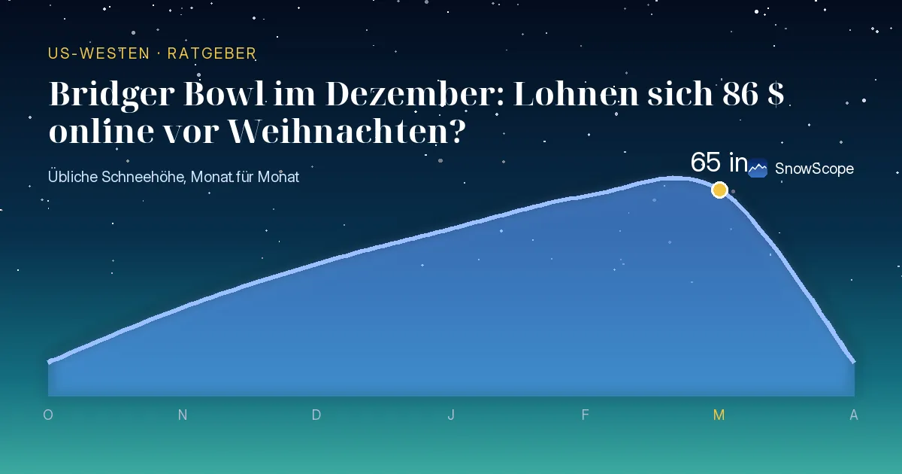

Bridger Bowl im Dezember: Lohnen sich 86 $ online vor Weihnachten?
Bridger Bowl, das gemeinnützige Skigebiet bei Bozeman, verlangt für einen Volltagskarte 86 $ online – kein Wochenendaufschlag, keine versteckten Gebühren. Der Haken: das Timing. Der Mittelhang erreicht am 15. Dezember in nur der Hälfte der vergangenen Winter 50 cm, doch in der Weihnachtswoche bringt guter Schneefall in 78 % der Jahre.
Die Live-Schneeprognose für Bridger Bowl in der SnowScope-AppSchneehöhen, Pulverschnee-Alarme und 3D-Karte, gratis.
Das Skigebiet und die Liftcard
Bridger liegt in der Bridger Range nördlich von Bozeman mit 12 Liften und ungefähr 42 km Pisten zwischen 1.865 m und 2.457 m. Die oberen Hänge sind steil; die unteren Pisten sind lang und sanft.
Eine Volltagskarte kostet 86 $ online oder 99 $ am Schalter für Erwachsene von 19 bis 69 Jahren. Die Nachmittagskarte ab 12:30 Uhr kostet 74 $. Wenn du drei Tage planen, kostet das Any Day Pack 230 $ für drei nicht aufeinanderfolgende Tage ohne Blackout-Daten.

Anfang Dezember: dünn und ungleichmäßig
Schnee kommt zuverlässig bis Mitte Oktober am Mittelhang an (2.161 m), doch im Dezember nimmt die Schneedecke langsam zu. Am typischen 1. Dezember hat der Mittelhang 37 cm. Bis zum 15. Dezember steigt das auf 51 cm – die Schwelle für gutes Skifahren – doch nur in der Hälfte der vergangenen Winter wurde diese Tiefe bis dahin erreicht.
Die Talstation auf 1.865 m ist dünner: ein typischer 15. Dezember zeigt 31 cm, und nur 24 % der Winter erreichen dort 50 cm. Die Bergstation (2.457 m) schneidet besser ab mit 73 cm am 15. Dezember in 78 % der Winter. Frühjahrsschnee ist zerstreut, und Felsen oder Boden können in tieferen Höhenlagen sichtbar sein.

Weihnachtswoche: der Wendepunkt
Am Weihnachtstag klettert der Mittelhang auf typischerweise 57 cm, und 72 % der Winter überschreiten 50 cm. Die Bergstation erreicht 79 cm in 85 % der Winter. Am 31. Dezember verstärken sich die Chancen erneut: Der Mittelhang durchschnittlich 69 cm in 76 % der Winter, und die Bergstation 88 cm in 87 %.
In der Woche vom 21.–27. Dezember brachten 78 % der vergangenen Winter guten Schneefall zum Mittelhang. Das ist der Wendepunkt von riskant zu zuverlässig. Wenn du bis Ende Dezember warten kannst, belohnen Bridgers steiles Gelände und transparente Preisgestaltung deine Geduld.
Wie dieser Winter sich vergleicht
Vergangene Winter zeigen einen allmählichen Rückgang des Dezemberschnees. Die ersten 15 Winter unserer Aufzeichnungen (1980–81 bis 1994–95) durchschnittlich 73 cm am Mittelhang am 15. Dezember, mit 67 % über 50 cm. Die letzten 15 Winter (2011–12 bis 2025–26) durchschnittlich 50 cm, mit 47 %. Der letzte Winter hatte 45 cm an diesem Datum, unter dem jüngsten Durchschnitt.
Dieser Trend spiegelt breitere Veränderungen in der Region wider, nicht nur Bridger. Das Gebiet sieht noch immer zuverlässige Schneeakkumulation ab Januar, wenn die typische maximale Tiefe am Mittelhang 141 cm beträgt.
Bridger versus Nachbargebiete
Montana Snowbowl, westlich von Missoula, verlangt 78 $ an Wochentagen und 85 $ an Wochenenden. Sein Mittelhang (1.909 m) durchschnittlich 76 cm am 15. Dezember in 83 % der Winter – ein stärkeres Frühjahrsangebot. Snow King in Jackson verlangt 100 $ und durchschnittlich 71 cm mit 87 % Chancen.
Für einen Tagesausflug von Bozeman aus hat Snowbowl bei der Schneetiefe einen Vorteil gegenüber Bridger. Für die Weihnachtswoche an machts Bridgers 86 $ Online-Tarif und Expertenterrain den Unterschied aus. Der Unterschied zwischen 78 $ und 86 $ ist weniger wichtig, wenn Schneechancen von 50 % auf 78 % springen.
Was du mitnehmen und überprüfen solltest
Bridger Canyon Road kann nach Pulverschnee-Morgen vereisen: Bereife Winterreifen vor und rechne mit langsamem Verkehr. Planen einen frühen Start oder akzeptiere Verzögerungen. Das obere Gelände ist steiles, ernsthaftes Terrain, das Lawinenausrüstung, einen Partner und eine aktuelle Lawinenbewertung erfordert – überprüfe das Gallatin National Forest Avalanche Center, bevor du die Piste verlässt.
Tipps für Skifahrer
- Kauf deine Karte online für 86 $, niemals am Schalter (99 $). Über eine Tagesfahrt spart dir das Geld für ein Bier.
- Vermeide das Glücksspiel: Überspringe 1.–15. Dezember, es sei denn, du verfolgst die oberen 2.457 m, wo 78 % der Winter guten Schnee haben. Planen stattdessen ab Weihnachtswoche an.
- Nutze das Any Day Pack (230 $ für drei Tage), um Besuche auf Ende Dezember und Januar zu verteilen, wenn Schnee tiefer und zuverlässiger ist.
- Bridger Canyon Road vereist leicht. Starten früh, bereife Winterreifen vor, und pack Geduld für die Heimfahrt.
- Oberes Gelände erfordert Lawinenausbildung und Ausrüstung. Überprüfe die offizielle Lawinenbewertung, bevor du die Liftzone verlässt.
Zu diesen Zahlen
Die Schneehöhen der Skigebiete sind der meiste Schnee in den oberen Hängen am angegebenen Tag; es sind Schätzungen für eine Fläche, keine Messung an einem Punkt. Prognosen können sich ändern. Lies vor dem Freeriden immer den offiziellen Lawinenlagebericht.
Offizielle Lawinenlageberichte: Gallatin National Forest Avalanche Center
Diesen Bericht zitieren
Für Forschung, Lehre oder Presse: Zahlen und Grafiken sind unter CC BY 4.0 mit dieser Quellenangabe frei nutzbar.
SnowScope (2026), Bridger Bowl im Dezember: Lohnen sich 86 $ online vor Weihnachten?, https://snowscope.app/blog/de/2026/11/bridger-bowl-bozeman-december-ski-cost.html, abgerufen am 2026-11-15
SnowScope (Atlas Labs). (2026, November 15). Bridger Bowl im Dezember: Lohnen sich 86 $ online vor Weihnachten?. SnowScope snow reports. https://snowscope.app/blog/de/2026/11/bridger-bowl-bozeman-december-ski-cost.html
BibTeX
@misc{snowscope2026bridgerbowlbozemandecemb,
author = {{SnowScope (Atlas Labs)}},
title = {Bridger Bowl im Dezember: Lohnen sich 86 $ online vor Weihnachten?},
year = {2026},
month = nov,
howpublished = {\url{https://snowscope.app/blog/de/2026/11/bridger-bowl-bozeman-december-ski-cost.html}},
note = {Published 2026-11-15 09:34 UTC; accessed 2026-11-15}
}· CC BY 4.0 · Methoden, Daten und Werkzeuge →
Bridger Bowl: Schnee und Temperatur nach Höhe, dieser Winter vs letzter (Werkzeuge) →
Bridger Bowl folgen
Gratis: eine Nachricht, wenn Neuschnee kommt, und jeden Morgen die Vorhersage.